📷 濃霧場景 skyfinder_10066 / 046.jpg
原始影像
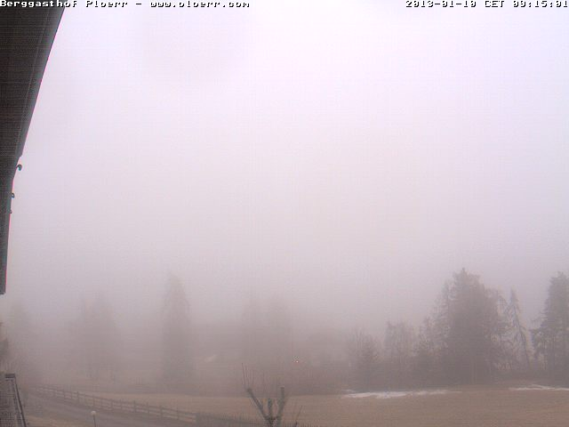
GT mask 色彩說明：🟢 綠=TP（正確天空） 🔴 紅=FP（誤標） 🔵 藍=FN（漏標）
GroundingDINO+SAM
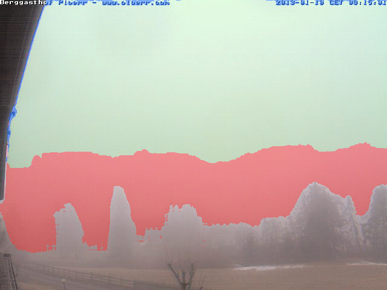
IoU: 0.6799
Prec: 0.6897
Recall: 0.9795
FP%: 0.4353
FN%: 0.0205
💬 高 Recall (0.97) 但 FP 暴增，受霧氣干擾嚴重，將大量非天空區域誤判為天空。
CLIPSeg
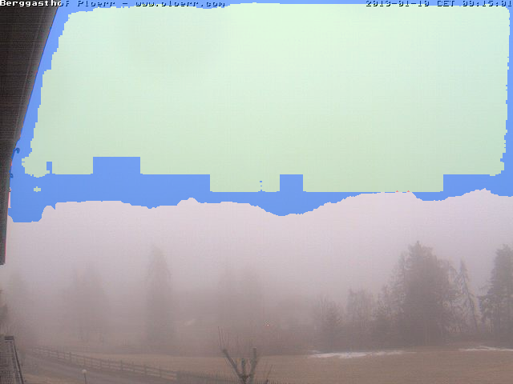
IoU: 0.8269
Prec: 0.9999
Recall: 0.8269
FP%: 0.0001
FN%: 0.1731
💬 表現最佳，語義理解在低對比度下最穩，幾乎沒有誤判 (FP=0.0001) 但偏保守。
DINOv2 + CNN
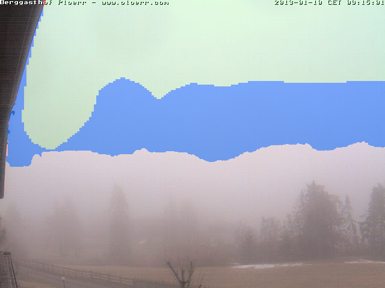
IoU: 0.6041
Prec: 0.9995
Recall: 0.6043
FP%: 0.0003
FN%: 0.3957
💬 極度保守，雖然精準度高，但 FN 接近 40%，在模糊邊界處無法有效識別。
📷 夜間建築物 skyfinder_10870 / 096.jpg
原始影像
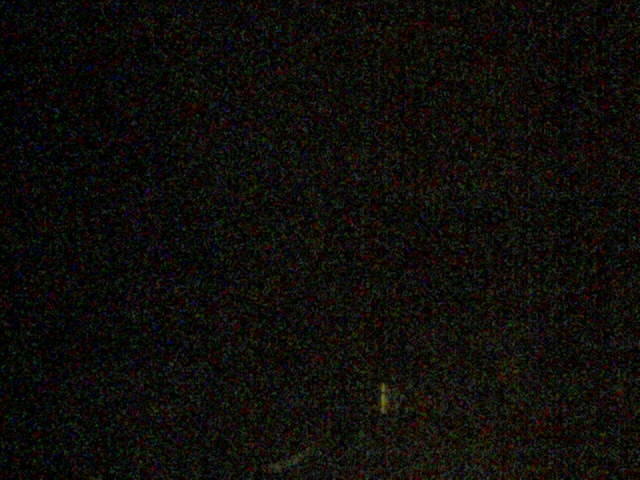
GT mask 色彩說明：🟢 綠=TP（正確天空） 🔴 紅=FP（誤標） 🔵 藍=FN（漏標）
GroundingDINO+SAM
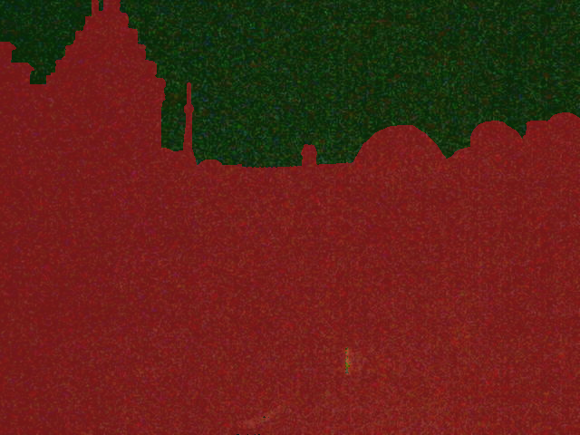
IoU: 0.2646
Prec: 0.2646
Recall: 1.0000
FP%: 0.9997
FN%: 0.0000
💬 徹底崩潰，FP 達 0.99，將所有黑暗中的建築物全數誤認為天空。
CLIPSeg
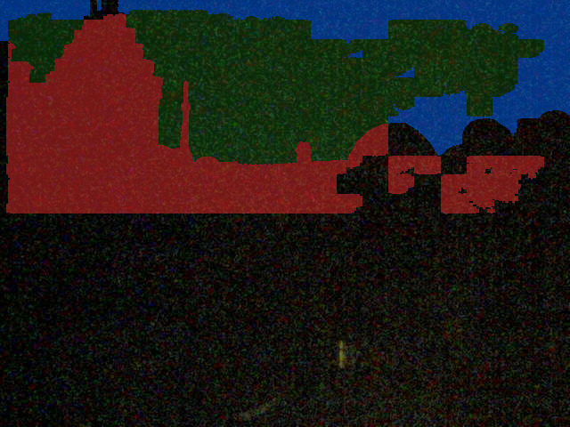
IoU: 0.4142
Prec: 0.5084
Recall: 0.6908
FP%: 0.2403
FN%: 0.3092
💬 受黑暗嚴重誤導，僅能勉強區分部分區域，精準度與召回率皆不理想。
DINOv2 + CNN
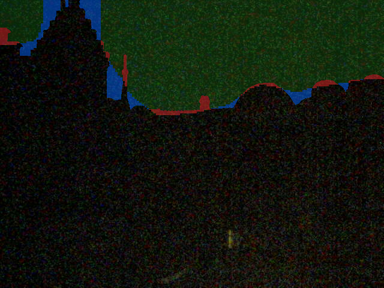
IoU: 0.9023
Prec: 0.9701
Recall: 0.9281
FP%: 0.0104
FN%: 0.0719
💬 展現強大魯棒性，IoU 達 0.90，能精確過濾複雜光影，識別出真正的天空輪廓。
📷 天海一線 skyfinder_3888 / 1518.jpg
原始影像
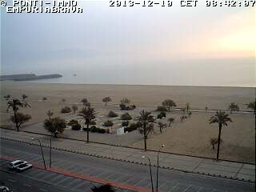
GT mask 色彩說明：🟢 綠=TP（正確天空） 🔴 紅=FP（誤標） 🔵 藍=FN（漏標）
GroundingDINO+SAM
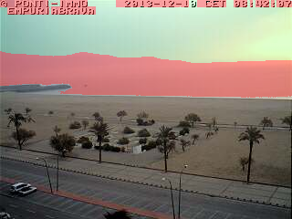
IoU: 0.5356
Prec: 0.5356
Recall: 1.0000
FP%: 0.2561
FN%: 0.0000
💬 無法區分海天，Recall 雖高但將海面全部納入，導致 FP 較高。
CLIPSeg
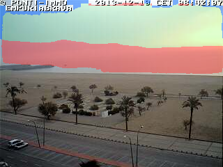
IoU: 0.5511
Prec: 0.5766
Recall: 0.9257
FP%: 0.2008
FN%: 0.0743
💬 雖然有語義概念，但對相似色塊的邊界區分力不足，IoU 僅 0.55。
DINOv2 + CNN
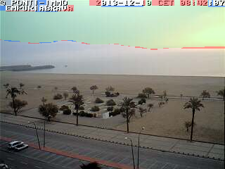
IoU: 0.9134
Prec: 0.9358
Recall: 0.9745
FP%: 0.0196
FN%: 0.0255
💬 表現優異，能從細微的質地差異切開海天邊界，IoU 突破 0.91。
📷 夜間強遮擋 skyfinder_4795 / 653.jpg
原始影像
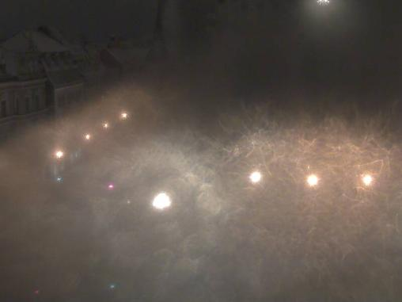
GT mask 色彩說明：🟢 綠=TP（正確天空） 🔴 紅=FP（誤標） 🔵 藍=FN（漏標）
GroundingDINO+SAM
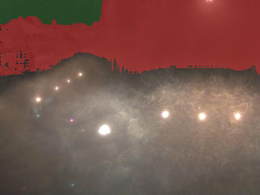
IoU: 0.1275
Prec: 0.1276
Recall: 0.9996
FP%: 0.3103
FN%: 0.0004
💬 完全失效，IoU 僅 0.12，在雜亂的遮擋物與夜色中無法界定範圍。
CLIPSeg
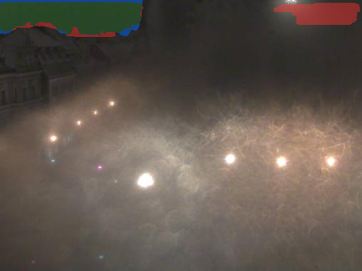
IoU: 0.6235
Prec: 0.6756
Recall: 0.8899
FP%: 0.0194
FN%: 0.1101
💬 表現尚可，但對遮擋物的邊緣切割不夠銳利，存在部分誤判。
DINOv2 + CNN
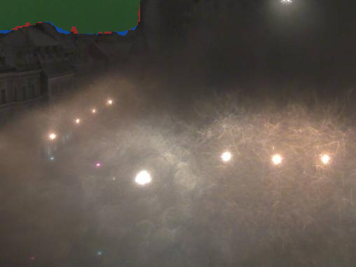
IoU: 0.9274
Prec: 0.9819
Recall: 0.9435
FP%: 0.0008
FN%: 0.0565
💬 穩定性極高，幾乎不受夜間遮擋干擾，IoU 0.92 為三者之冠。
📷 日間建築物 skyfinder_9112 / 097.jpg
原始影像
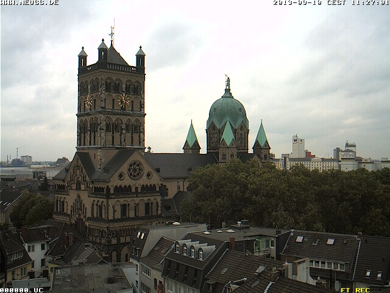
GT mask 色彩說明：🟢 綠=TP（正確天空） 🔴 紅=FP（誤標） 🔵 藍=FN（漏標）
GroundingDINO+SAM
IoU: 0.9624
Prec: 0.9960
Recall: 0.9662
FP%: 0.0030
FN%: 0.0338
💬 表現最亮眼 (IoU 0.96)，在特徵明顯的日間場景，SAM 的強大邊緣分割能力優勢盡顯。
CLIPSeg
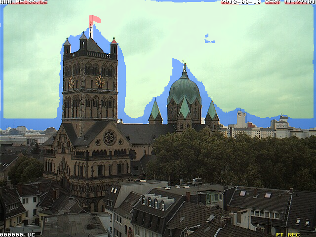
IoU: 0.8451
Prec: 0.9884
Recall: 0.8536
FP%: 0.0076
FN%: 0.1464
💬 表現穩定但保守，FN 較高導致 IoU 輸給其他兩者。
DINOv2 + CNN
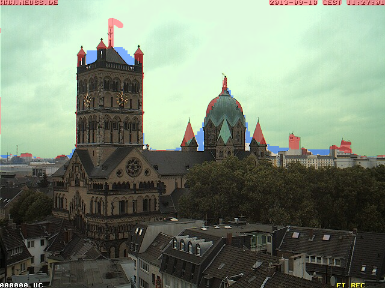
IoU: 0.9334
Prec: 0.9520
Recall: 0.9795
FP%: 0.0378
FN%: 0.0205
💬 表現優異且平衡，Recall 高達 0.97，但在極細微邊緣處有輕微過度預測。
📡 極端天空情境雷達圖
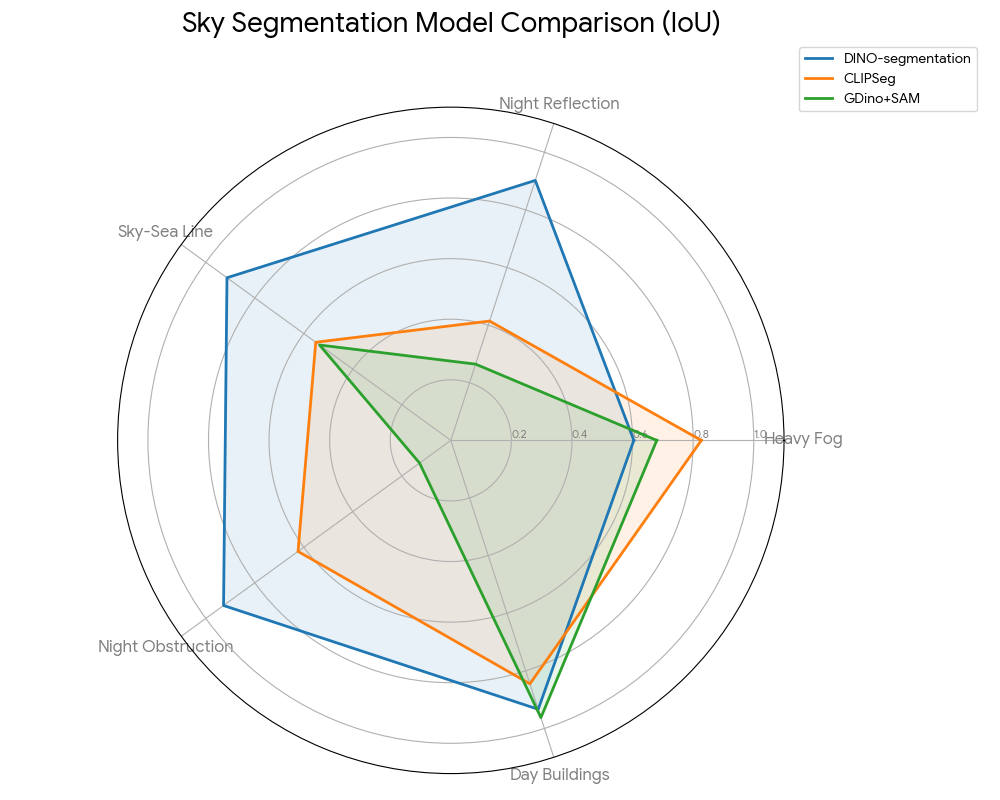
🔵 DINOv2 + CNN
在所有情境下都保持了極高的 IoU（>0.90，除了濃霧情境）。這證明了它強大的魯棒性（Robustness），無論是面對夜間反光、海天一線還是強遮擋，它都能穩定輸出精確的分割結果。這是一個全能型且可落地的模型。
🟢 Grounding DINO + SAM
一個典型的「好天氣模型」。它在標準日間場景（IoU 0.96）表現甚至優於 DINO-seg，證明了 SAM 的邊緣分割實力。但在複雜光影和夜間，它的偵測框（Grounding DINO）會完全失效，拖累了 SAM 的發揮。
🟠 CLIPSeg
表現相對中規中矩。它在濃霧情境下反而表現最好，證明了純語義理解的優勢。但在需要精確辨識邊界（如海天一線）或對抗光影干擾（如夜間反光）時，它的性能上限較低。
📊 全資料集平均指標（116 張，含無天空場景）
✅ 綠底加粗 = 該指標最佳值 ｜ IoU / Precision / Recall 越高越好 ｜ FP rate / FN rate 越低越好
⚠️ 負樣本測試 (Negative Sample Testing)：資料集包含 10 張完全無天空影像（GT Mask 全黑），用於測試模型之抗干擾能力。
TNR（負樣本）：針對資料集中 10 張完全無天空影像（skyfinder_21444）單獨計算，= 1 − FP rate，衡量模型「在沒有天空時，能正確判斷沒有天空」的能力。
⚠️ 負樣本測試 (Negative Sample Testing)：資料集包含 10 張完全無天空影像（GT Mask 全黑），用於測試模型之抗干擾能力。
TNR（負樣本）：針對資料集中 10 張完全無天空影像（skyfinder_21444）單獨計算，= 1 − FP rate，衡量模型「在沒有天空時，能正確判斷沒有天空」的能力。
| 方法 | 樣本數 | IoU ↑ | Precision ↑ | Recall ↑ | FP rate ↓ | FN rate ↓ | TNR ↑ |
|---|---|---|---|---|---|---|---|
| GroundingDINO+SAM | 106 | 0.7282 | 0.7393 | 0.9030 | 0.1322 | 0.0970 | 推論失敗 |
| CLIPSeg | 106 | 0.7619 | 0.8510 | 0.8883 | 0.0510 | 0.1117 | 推論失敗 |
| DINOv2 + CNN | 116 | 0.9204 | 0.8823 | 0.8632 | 0.0105 | 0.0506 | 1.0000 |
結論
🥇 DINOv2 + CNN 在 IoU（0.9204）、FP rate（0.0105）、FN rate（0.0506）三項均為最佳，整體表現全面領先。優勢來自在本資料集的 in-domain 訓練，能精準辨識天空邊界。
🥈 CLIPSeg IoU（0.7619）居中，Precision 最高（0.8510），且不需要任何訓練資料，是零樣本方法中最穩定的選擇。
🥉 GroundingDINO+SAM Recall 最高（0.9030），幾乎不漏掉天空，但 FP rate 最高（0.1322），大量誤標非天空區域，拖低 IoU（0.7282）。適合對「不漏掉任何天空」有強烈需求、但能容忍誤報的場景。
🥇 DINOv2 + CNN 在 IoU（0.9204）、FP rate（0.0105）、FN rate（0.0506）三項均為最佳，整體表現全面領先。優勢來自在本資料集的 in-domain 訓練，能精準辨識天空邊界。
🥈 CLIPSeg IoU（0.7619）居中，Precision 最高（0.8510），且不需要任何訓練資料，是零樣本方法中最穩定的選擇。
🥉 GroundingDINO+SAM Recall 最高（0.9030），幾乎不漏掉天空，但 FP rate 最高（0.1322），大量誤標非天空區域，拖低 IoU（0.7282）。適合對「不漏掉任何天空」有強烈需求、但能容忍誤報的場景。